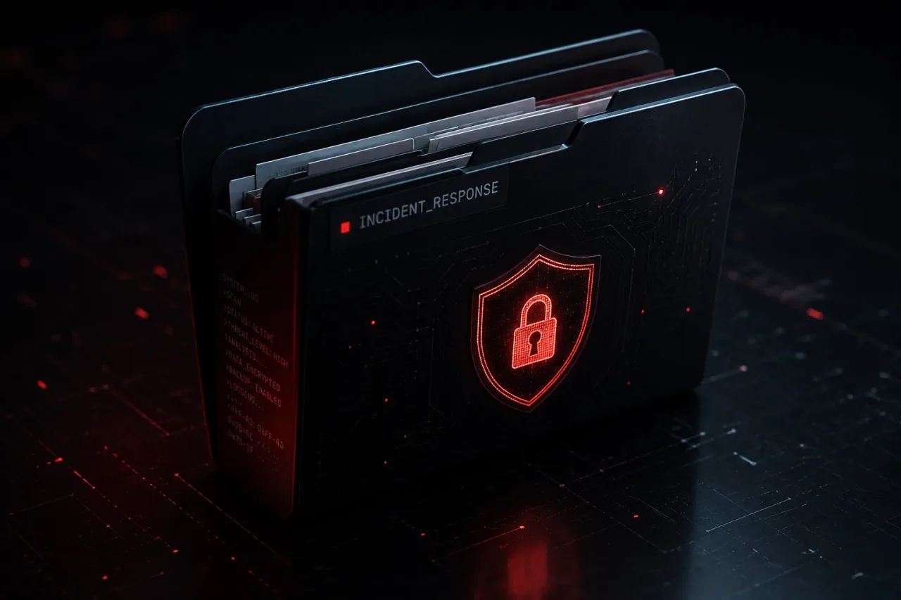

NOTICIAS
NOTICIASInfectaron pantallas de coche por su propio canal de actualización
Kaspersky documenta el primer malware diseñado para pantallas de coche Android. No llegó por una app rara: llegó por el canal de actualización oficial.
LeerAnálisis en profundidad, investigación de amenazas y perspectiva de la industria para que vayas por delante de lo que viene – nuevas CVE, lanzamientos de modelos y patrones de ataque, sin cobertura sensacionalista.
NOTICIASKaspersky documenta el primer malware diseñado para pantallas de coche Android. No llegó por una app rara: llegó por el canal de actualización oficial.
Leer NOTICIAS
NOTICIASCVE-2026-59310 permite ejecutar código sin autenticación en VMware vCenter. Broadcom parcheó el 29 de julio y cinco días después ya había explotación. 361 víctimas en 47 países.
Leer NOTICIAS
NOTICIASCVE-2026-71362 permite colarse en la sesión de otro cliente en Adobe Commerce, sin cuenta y sin que la víctima pulse nada. CVSS 9,1, corregido en la actualización de agosto.
Leer NOTICIAS
NOTICIASMicrosoft ha detectado un aumento en ataques utilizando el malware ACR Stealer para robar contraseñas y tokens. Este malware extrae datos críticos del navegador para eludir MFA. Recomendación: implementa políticas de acceso condicional y monitoreo de EDR de inmediato.
Leer NOTICIAS
NOTICIASEl uso de agentes de IA sin supervisión humana está creando riesgos críticos de seguridad al permitir la ejecución no controlada de comandos. Esta automatización sin validación facilita brechas masivas. Recomendación: implementa procesos de aprobación humana obligatorios para acciones de alto impacto y restringe los privilegios de los sistemas de IA.
Leer NOTICIAS
NOTICIASAl encadenar dos vulnerabilidades, los atacantes obtienen acceso de nivel raíz en los dispositivos de acceso móvil de SonicWall. Esta explotación facilita el movimiento lateral y el despliegue de ransomware. Actualice su firmware inmediatamente para mitigar este riesgo crítico.
Leer NOTICIAS
NOTICIASInvestigadores han detectado siete paquetes npm maliciosos que atacan el ecosistema Vite utilizando infraestructura blockchain para C2. Esta campaña, llamada ViteVenom, instala un troyano de acceso remoto en las máquinas de los desarrolladores. Revise sus dependencias de inmediato y restrinja la instalación de paquetes no autorizados.
Leer NOTICIAS
NOTICIASLos informes de inteligencia indican que las organizaciones gubernamentales son atacadas diariamente por ransomware, aprovechando su necesidad crítica de mantener servicios ininterrumpidos. Los atacantes utilizan tácticas de doble extorsión para maximizar la presión sobre las agencias. Implemente arquitecturas de confianza cero y respalde sus datos de forma inmutable y fuera de línea para protegerse contra este riesgo creciente.
LeerKaspersky documenta el primer malware con una cadena de infección diseñada para pantallas de coche. Llegó por TWCore, la app de sistema legítima que gestiona analítica y actualizaciones, servida por el canal MQTT. Llama a su servidor cada 90 minutos y admite nueve órdenes.

CVE-2026-59310 permite ejecutar código sin autenticación en VMware vCenter. Broadcom parcheó el 29 de julio y cinco días naturales después ya había explotación. 361 IPs víctima en 47 países, con Alemania y Francia entre las cinco más golpeadas, y ransomware derivado de Babuk.

CVE-2026-71362 permite colarse en la sesión de otro cliente en Adobe Commerce, sin cuenta, sin permisos de administrador y sin que la víctima pulse nada. CVSS 9,1, corregido en la actualización de agosto. Adobe dice no tener constancia de explotación; Sansec afirma que su WAF ya bloquea intentos.

Microsoft ha detectado un aumento en ataques utilizando el malware ACR Stealer para robar contraseñas y tokens. Este malware extrae datos críticos del navegador para eludir MFA. Recomendación: implementa políticas de acceso condicional y monitoreo de EDR de inmediato.
El uso de agentes de IA sin supervisión humana está creando riesgos críticos de seguridad al permitir la ejecución no controlada de comandos. Esta automatización sin validación facilita brechas masivas. Recomendación: implementa procesos de aprobación humana obligatorios para acciones de alto impacto y restringe los privilegios de los sistemas de IA.
Al encadenar dos vulnerabilidades, los atacantes obtienen acceso de nivel raíz en los dispositivos de acceso móvil de SonicWall. Esta explotación facilita el movimiento lateral y el despliegue de ransomware. Actualice su firmware inmediatamente para mitigar este riesgo crítico.

Investigadores han detectado siete paquetes npm maliciosos que atacan el ecosistema Vite utilizando infraestructura blockchain para C2. Esta campaña, llamada ViteVenom, instala un troyano de acceso remoto en las máquinas de los desarrolladores. Revise sus dependencias de inmediato y restrinja la instalación de paquetes no autorizados.
Los informes de inteligencia indican que las organizaciones gubernamentales son atacadas diariamente por ransomware, aprovechando su necesidad crítica de mantener servicios ininterrumpidos. Los atacantes utilizan tácticas de doble extorsión para maximizar la presión sobre las agencias. Implemente arquitecturas de confianza cero y respalde sus datos de forma inmutable y fuera de línea para protegerse contra este riesgo creciente.
Historias destacadas de la semana: agentes de IA OpenClaw explotados en WhatsApp, ataque de ransomware a la firma naval TKMS y brecha de datos en Lidl. Iran rastrea a militares mediante telemetría móvil, y un nuevo malware para macOS, CrashStealer, ha sido detectado. Se recomienda encarecidamente a las organizaciones que traten las integraciones de IA como vectores de alto riesgo y auditen rigurosamente todos los complementos de terceros para evitar la exposición de datos sensibles.

El presidente Zelenski ha nombrado a Yevhenii Khmara, exjefe interino del SBU, como ministro de Defensa interino de Ucrania. Khmara, experto en contrainteligencia y operaciones especiales, supervisará la modernización del mando militar y la integración de inteligencia avanzada para contrarrestar las operaciones rusas. Se aconseja a los contratistas y socios estratégicos que revisen sus protocolos de seguridad en las comunicaciones y se preparen para un entorno de adquisiciones más estricto bajo su administración.

KFC Japón deja de aceptar pedidos online y podría cerrar locales después de que los sistemas de su partner logístico cayeran por un ciberataque. La cadena no fue atacada directamente: heredó la parada de un tercero.
El correo supera a los exploits como principal causa raíz del ransomware, según una nueva investigación. El dato incómodo: el MFA estaba desplegado en el 97% de los ataques basados en credenciales – y aun así hubo compromiso.
El programa Gold Eagle permitirá a la industria, los operadores de infraestructura crítica y el gobierno usar inteligencia artificial para detectar, priorizar y parchear vulnerabilidades más rápido, según sus responsables.
Progress Software ha confirmado que una vulnerabilidad zero-day en ShareFile fue la causa de las recientes interrupciones del servicio para los clientes del Storage Zones Controller. La compañía ya ha publicado un parche que corrige el fallo y está restaurando el acceso de los usuarios afectados. Si operas un entorno ShareFile con Storage Zones Controller, verifica de inmediato que has aplicado el último parche del fabricante para recuperar la estabilidad y mitigar un posible compromiso.
Microsoft publicó el parche de CVE-2026-45659 en la actualización acumulativa de mayo, pero no publicó el boletín hasta semanas después. CISA ha confirmado explotación activa y lo ha añadido a su catálogo KEV.

CVE-2026-48558 alcanza la severidad CVSS máxima en SimpleHelp, software de gestión remota muy usado por MSP; la explotación se rastrea vía el cargador «TaskWeaver». Un único endpoint vulnerable puede propagarse a todas las redes de clientes de ese MSP.

Un conjunto de fallos críticos en las herramientas on-premise de JetBrains se encadena en bypass de autenticación, toma de control de cuentas y RCE – el más grave, con CVSS 9.8 por códigos de recuperación predecibles.
Claude Sonnet 5 se lanzó el 30 de junio de 2026 y ya es el modelo por defecto para usuarios Free y Pro, con foco en planificación, uso de herramientas y ejecuciones autónomas. Si tienes Claude integrado en tus herramientas, compáralo con tu propio conjunto de evaluación antes de migrar del todo.